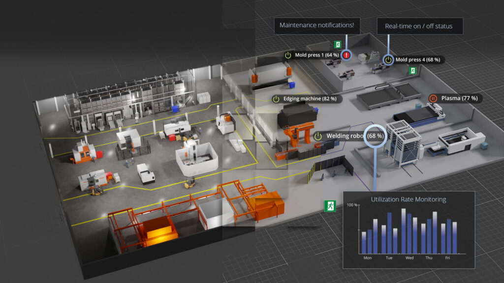
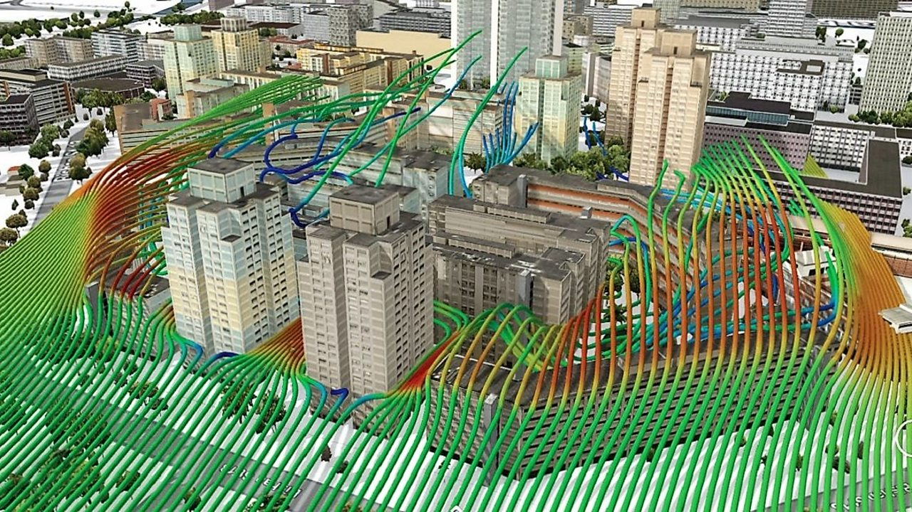

Una exploración técnica del gemelo digital urbano, aprendizaje automático y optimización de logística para Panamá
Una réplica virtual de un sistema físico que evoluciona en tiempo real.
Ejemplo de gemelo digital industrial con monitoreo en tiempo real

Plataforma 3D dinámica de toda la ciudad-estado
Simulación de flujo de aire y clima urbano en tiempo real

Vía Centenario: 12 km que conectan centro logístico con el puerto
Relación entre flujo $q$ (vehículos/hora) y densidad $k$ (vehículos/km)
donde $v_f$ = velocidad libre, $k_j$ = densidad de atasco
Tiempo de espera en función de la utilización $\rho = \lambda/\mu$
$\lambda$ = tasa de llegada, $\mu$ = tasa de servicio
Ejemplo: "¿A qué hora debería salir mañana con 20 contenedores?"
Dividimos Vía Centenario en $N$ segmentos, cada uno con estado $(k_i, v_i)$
Fusión de predicción del modelo con mediciones ruidosas
Ecuación en derivadas parciales de Lighthill-Whitham-Richards
Resolvemos numéricamente con método de diferencias finitas
Discretización espacial y temporal de la PDE
Modelo lineal multivariado
Características: densidad, hora, día de semana, clima, eventos
Mean Squared Error durante el entrenamiento
Optimización: Gradient Descent (Adam, learning rate = 0.001)
Función logística (sigmoid) para probabilidad de congestión
Minimizar función de costo combinada
$T(t,L)$ = tiempo de viaje predicho, $C_{\text{op}}(L)$ = costo operativo
Representación vectorial de documentos para búsqueda semántica
Gemini embeddings → vecDB → top-k retrieval → contexto LLM
Cómo el LLM pondera relevancia entre tokens
$Q$ = queries, $K$ = keys, $V$ = values, $d_k$ = dimensión de clave
Un hub logístico más eficiente, competitivo y sostenible
Urban Digital Twin & AI Copilot
¿Preguntas?
Expo Matemática 2025 · Panamá